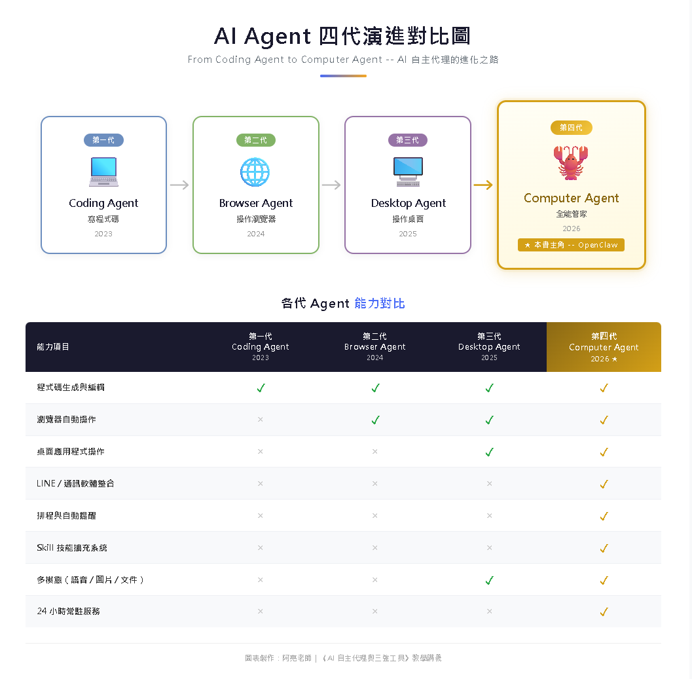
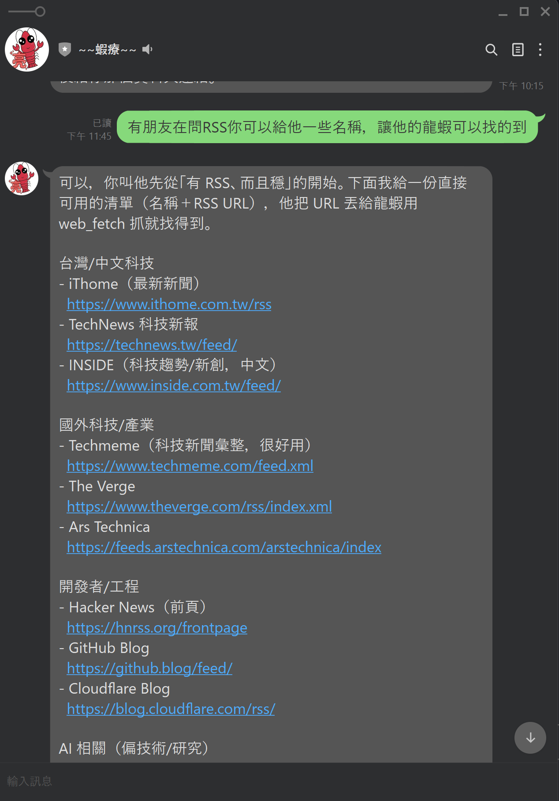
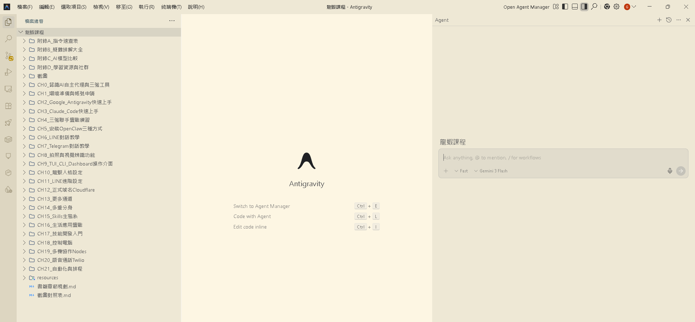
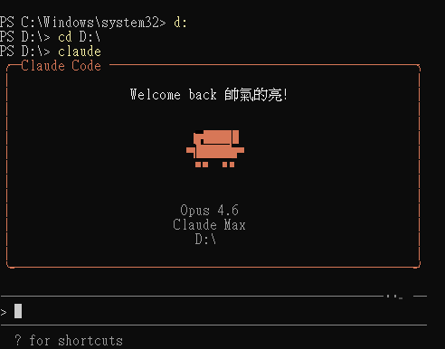

AI Agent 自主代理三王實戰
在正式動手之前，讓我們先建立正確的觀念——了解自主代理 AI 是什麼、三個核心工具各自扮演什麼角色
你一定用過 ChatGPT 或 Gemini 吧？打開網頁、輸入問題、AI 回答你。但它有一個根本性限制：它永遠在等你。你不問，它就不動。
自主代理 AI 不一樣——它像一個住在你家的私人管家。你交代一句「幫我處理今天的事」，等你回來，所有事情都搞定了。
| 類型 | 比喻 | 你需要做的事 |
|---|---|---|
| 聊天機器人 | 📖 百科全書 | 每次翻開查一個問題 |
| AI 助手（Siri） | 🎙️ 語音遙控器 | 每次說一個指令 |
| 自主代理 AI | 🦞 私人管家 | 交代一次，它自己安排好 |
設定「每天早上查天氣」，它就每天自動做
上網搜尋、操作瀏覽器、讀寫檔案、發送訊息
同時在 LINE、Telegram、Email 上處理事情
記住你的偏好、格式、語氣、接收時間
這些場景在你讀完這本書之後，全部都能實現。
每天早上，LINE 上已收到龍蝦整理好的天氣預報、新聞摘要、行事曆提醒、未讀 Email。全部凌晨 5 點自動完成。
人在咖啡廳，用 Telegram 叫龍蝦截圖家裡電腦桌面、上傳檔案到 Google Drive——完全不用回家。
在 LINE 跟龍蝦說「穿白色洋裝在花園拍一張」，龍蝦自動用 AI 生成虛擬形象照片傳回來。
群組裡同時有三個龍蝦 Bot：「小助」回答問題、「小編」寫文案、「小勳」搞笑拍照——多重分身各司其職。

2023 年｜GitHub Copilot、Cursor
只會在編輯器裡寫程式碼。像一個打字超快的助理——但只會打字，不會跑腿。
2024 年｜Browser Use、Playwright AI
能操作瀏覽器、填表單、擷取資料。AI 終於從編輯器裡「走出來」了。
2025 年｜Anthropic Computer Use
能操作整個桌面！但只限面前這台電腦，關機就停擺。
2026 年｜OpenClaw
整合前三代 + 多通道通訊 + 24hr 運行 + 多機協作 + 技能擴充 + 語音通話！
| 能力 | 第一代 | 第二代 | 第三代 | 第四代 OpenClaw |
|---|---|---|---|---|
| 寫程式碼 | ✅ | ✅ | ✅ | ✅ |
| 操作瀏覽器 | ✗ | ✅ | ✅ | ✅ |
| 操作桌面 | ✗ | ✗ | ✅ | ✅ |
| 多通道通訊 | ✗ | ✗ | ✗ | ✅ 22 個 |
| 24 小時運行 | ✗ | ✗ | ✗ | ✅ |
| 多機協作 | ✗ | ✗ | ✗ | ✅ |
| 技能擴充 | ✗ | ✗ | ✗ | ✅ 70+ |
| 語音通話 | ✗ | ✗ | ✗ | ✅ |
| 記憶系統 | ✗ | ✗ | ✗ | ✅ |
OpenClaw 是管家、Antigravity 是工程師、Claude Code 是特助——三個角色分工合作，讓你的 AI 體驗達到最高水準。
┌──────────────────────────────────────────────────────┐ │ 你（使用者） │ │ │ │ ┌─────────────┐ ┌───────────┐ ┌──────────────┐ │ │ │ 🦞 OpenClaw │ │ 🚀 Anti- │ │ 🤖 Claude │ │ │ │ 龍蝦 AI │ │ gravity │ │ Code │ │ │ │ │ │ │ │ │ │ │ │ AI 管家 │ │ AI 工程師 │ │ AI 終端機特助 │ │ │ │ │ │ │ │ │ │ │ │ LINE/TG 對話 │ │ 視覺化開發 │ │ 終端機操作 │ │ │ │ 技能擴充 │ │ 多 Agent │ │ Git/檔案 │ │ │ │ 多機控制 │ │ 專案管理 │ │ 程式碼理解 │ │ │ │ 語音通話 │ │ 網頁預覽 │ │ 自動化腳本 │ │ │ └─────────────┘ └───────────┘ └──────────────┘ │ └──────────────────────────────────────────────────────┘
OpenClaw。Antigravity。Claude Code。
一個永遠在線的 AI 管家，24 小時不間斷等待你的指令。由奧地利開發者 Peter Steinberger 創建，2026 年 1 月問世，完全免費開源。

| 項目 | 說明 |
|---|---|
| 費用 | 開源免費（搭配 AI 模型：Gemini 免費 / OpenAI OAuth 免費 / 付費 API） |
| 支援平台 | Windows / macOS / Linux / 雲端 |
| 通訊管道 | LINE、Telegram、WhatsApp、Discord 等 22 個 |
| 官方技能 | 70+ 個（天氣、Email、日曆、自拍、語音通話等） |
Google 推出的 AI 開發環境。長得像 VS Code，但你不需要會寫程式——用中文描述你想要什麼，它就自動幫你生成完整的應用程式。

| 項目 | 說明 |
|---|---|
| 費用 | 個人免費（公開預覽版） |
| AI 模型 | Gemini 3.1 Pro / Gemini 3 Flash |
| 特色 | Agent Manager 多代理協作、內建瀏覽器 |
即時寫程式、補全、除錯。適合你想一邊看一邊改。
同時派出多個 AI Agent 分頭工作，互不干擾。
Anthropic 推出的終端機 AI 助手。住在終端機裡，用中文告訴它要做什麼，它會直接在你的電腦上執行操作。

# 啟動 Claude Code claude # 然後用中文跟它對話： > 幫我看一下這個專案的結構 > 把 config.json 裡的 port 改成 3000 > 幫我 commit 這次的修改
| 項目 | 說明 |
|---|---|
| AI 模型 | Claude Opus 4.6 / Sonnet 4.6 |
| 操作方式 | 終端機 + VS Code / JetBrains 整合 |
| 特色 | 深度程式碼理解、Git 操作、Voice Mode 語音輸入 |
| 比較項目 | 🦞 OpenClaw | 🚀 Antigravity | 🤖 Claude Code |
|---|---|---|---|
| 定位 | AI 管家 | AI 工程師 | AI 終端機特助 |
| 主要用途 | 生活管理、通訊 | 開發應用程式 | 檔案操作、自動化 |
| 操作介面 | LINE / TG / Dashboard | 圖形化 IDE | 終端機命令列 |
| 費用 | 免費 + API | 個人免費 | API Key 費用 |
| 通訊能力 | ✅ 22 個通道 | ✗ | ✗ |
| 操作瀏覽器 | ✅ Browser Relay | ✅ 內建 | ✗ |
| 操作桌面 | ✅ Peekaboo | ✗ | ✅ Bash 指令 |
| 多機控制 | ✅ Nodes | ✗ | ✗ |
| 最適合 | 全天候助手 | 快速開發 | 高效操作電腦 |
22 章 + 4 篇附錄，像蓋房子一樣由淺入深：
| 篇 | 章節 | 比喻 | 你將學會 |
|---|---|---|---|
| ✨ 入門篇 | CH0 ~ CH4 | 認識材料 | 認識三王工具、基本操作 |
| 📦 安裝篇 | CH5 ~ CH8 | 打地基 | 安裝 OpenClaw、聊天實戰 |
| 🎛️ 操作篇 | CH9 ~ CH10 | 裝潢內部 | 操作介面、人格設定 |
| 🌐 通道篇 | CH11 ~ CH14 | 開門開窗 | LINE 進階、更多通道、分身 |
| ⚡ 技能篇 | CH15 ~ CH17 | 添購家電 | 70+ 技能、生活應用、開發 |
| 🚀 進階篇 | CH18 ~ CH21 | 升級智慧宅 | 控制電腦、多機、語音、排程 |
按順序 CH0→CH21 讀，每章承接前一章
快速翻 CH0~CH4，從 CH5 安裝開始
查表跳到需要的章節，但建議先讀 CH1
CH1，把帳號、API Key、LINE Developer、ngrok 這些前置資源先準備好。自主代理 AI 跟聊天機器人根本不同。你不再是提問者，而是指揮者。
四代演進：從寫程式→瀏覽器→桌面→全能管家。OpenClaw 是第四代代表。
三王互補：管家 + 工程師 + 特助，各司其職、完美搭配。
學習路線：22 章 + 4 附錄，從零基礎到全能 AI 使用者。
📖 下一章預告：CH1 打好地基——帳號與工具全準備
就像做菜前先備料——Gmail、LINE Developer、AI API Key、ngrok⋯⋯我們會把所有需要的「食材」全部準備齊全！